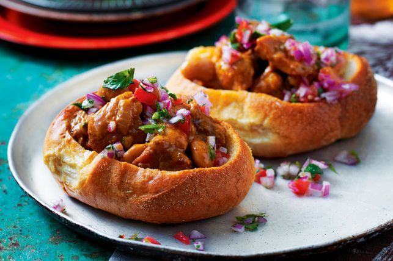

Historique
Cape Town, surnommée la « Mère Ville », possède une histoire riche et complexe qui remonte à plusieurs siècles. Fondée par les colons hollandais en 1652, la ville a été un important point de départ pour les explorateurs européens en route vers l'Extrême-Orient. Au fil des ans, Cape Town est devenue un carrefour culturel, attirant des populations diverses, notamment des esclaves d'Afrique, d'Asie et d'Europe. Cette diversité se reflète dans l'architecture, la cuisine et les traditions de la ville. Le quartier coloré de Bo-Kaap témoigne de l'héritage culturel de la population malaise, tandis que le quartier historique de District Six rappelle les ravages de l'apartheid. Aujourd'hui, Cape Town est une ville dynamique où l'ancien et le nouveau se côtoient harmonieusement, offrant aux visiteurs une expérience culturelle unique imprégnée d'histoire et de diversité.
Places emblématiques
The Silo Hotel
"The Silo Hotel", une oasis de luxe et d'élégance nichée au cœur du dynamique V&A Waterfront à Cape Town, est bien plus qu'un simple hébergement. Situé dans un ancien silo à grains historique, cet hôtel cinq étoiles offre une expérience incomparable, mariant harmonieusement histoire et modernité. Ses suites somptueuses, dotées de fenêtres panoramiques offrant des vues époustouflantes sur la ville, la montagne et l'océan, invitent à la détente et à l'émerveillement. Les restaurants gastronomiques de l'hôtel ravissent les palais les plus exigeants avec une cuisine raffinée mettant en valeur les saveurs locales et internationales. Le spa de luxe propose des soins exclusifs pour une expérience de bien-être ultime. Avec un service attentionné et personnalisé, The Silo Hotel promet à ses clients une escapade inoubliable dans un cadre empreint de sophistication et de charme.
Le Cap de Bonne-Espérance
Le Cap de Bonne-Espérance, situé à la pointe sud de la péninsule du Cap en Afrique du Sud, est une merveille naturelle d'une beauté à couper le souffle. Ce site emblématique est célèbre pour ses falaises escarpées, ses plages isolées et sa végétation luxuriante. En plus de sa beauté naturelle, le Cap de Bonne-Espérance abrite une biodiversité exceptionnelle, avec une faune et une flore uniques, y compris des espèces endémiques. Les visiteurs peuvent explorer les sentiers de randonnée qui serpentent à travers le parc national du Cap de Bonne-Espérance, offrant des vues panoramiques sur l'océan Atlantique et l'océan Indien se rencontrant. Les eaux tumultueuses entourant le Cap sont également connues pour être le théâtre de nombreux naufrages, ajoutant une aura de mystère à cet endroit majestueux. Pour les amoureux de la nature et les aventuriers, une visite au Cap de Bonne-Espérance est une expérience inoubliable, imprégnée de la grandeur et de la puissance de la nature sauvage.

Kirstenbosch National Botanical
Le Jardin botanique national de Kirstenbosch, niché au pied de la majestueuse Table Mountain à Cape Town, est une oasis de biodiversité et de beauté naturelle. Fondé en 1913, ce jardin botanique renommé abrite une incroyable diversité de flore indigène, avec plus de 7 000 espèces de plantes à découvrir. Les sentiers sinueux et les ponts suspendus invitent les visiteurs à explorer les jardins luxuriants, offrant des vues à couper le souffle sur la montagne environnante et la ville au loin. Des concerts en plein air, des expositions d'art et des événements culturels ajoutent à l'atmosphère vibrante du jardin, en faisant un lieu de détente et de découverte pour les habitants et les touristes. Kirstenbosch est bien plus qu'un simple jardin botanique ; c'est un joyau vert où la nature et la culture se rencontrent dans une harmonie parfaite.

Robben Island
Robben Island, située au large des côtes de Cape Town, est bien plus qu'une simple île ; c'est un symbole puissant de résilience et de lutte pour la liberté. Célèbre pour avoir été le lieu de détention de Nelson Mandela et d'autres figures de la lutte anti-apartheid, cette île chargée d'histoire offre aux visiteurs une perspective poignante sur le passé tourmenté de l'Afrique du Sud. Les tours guidés, animés par d'anciens prisonniers politiques, transportent les visiteurs dans un voyage émotionnel à travers les cellules austères et les cours de la prison, témoignant des injustices passées. Malgré son passé sombre, Robben Island incarne également l'espoir et la résilience, symbolisant la transition vers une ère de réconciliation et de justice. Une visite à Robben Island est une expérience incontournable pour comprendre pleinement l'histoire et l'âme de l'Afrique du Sud.
Plats locaux
Le Bunny Chow
Le Bunny Chow est un plat emblématique de la cuisine sud-africaine, originaire de la communauté indienne de Durban. Ce mets savoureux est constitué d'un quart de miche de pain blanc évidé et rempli d'un délicieux curry épicé de viande, de poulet ou de légumes. Cette création culinaire ingénieuse est non seulement délicieuse, mais aussi pratique, permettant aux convives de déguster leur repas sans couverts. Traditionnellement servi dans les rues de Durban, le Bunny Chow est devenu un symbole de la cuisine de rue sud-africaine, apprécié par les habitants et les visiteurs du monde entier. Son mélange unique de saveurs épicées et de texture moelleuse en font un plat incontournable pour ceux qui souhaitent découvrir la richesse de la gastronomie sud-africaine.

Le Snoek Braai
Le Snoek Braai est un plat emblématique de la cuisine sud-africaine, mettant en valeur le délicieux poisson local appelé snoek. Préparé sur un gril à feu de bois, le snoek est mariné dans un mélange d'épices simples mais savoureuses, comme du citron, de l'ail et du poivre, pour lui donner une saveur subtile et délicieuse. La chair tendre et savoureuse du snoek, associée à la fumée du feu de bois, crée une expérience gustative incomparable. Servi avec du pain frais et du beurre, le Snoek Braai est un plat qui célèbre la richesse des ressources marines de l'Afrique du Sud tout en offrant une expérience culinaire authentique et mémorable. Que ce soit lors d'un pique-nique en bord de mer ou lors d'un rassemblement familial, le Snoek Braai est un véritable symbole de convivialité et de plaisir.

Le Malva Pudding
Le Malva Pudding est un dessert emblématique de l'Afrique du Sud, apprécié pour sa texture moelleuse et son goût riche et sucré. Ce délice culinaire est un gâteau chaud et fondant, imprégné d'une délicieuse sauce sucrée à la crème qui le rend irrésistiblement savoureux. Les saveurs de caramel et de vanille se mêlent harmonieusement dans chaque bouchée, offrant une expérience gustative réconfortante et indulgente. Souvent servi avec de la crème anglaise ou de la glace à la vanille, le Malva Pudding est un dessert qui ravit les papilles et réchauffe le cœur. Que ce soit à la maison, dans les restaurants ou lors de célébrations spéciales, ce dessert traditionnel est un incontournable de la cuisine sud-africaine, laissant une impression durable sur ceux qui ont le plaisir de le déguster.